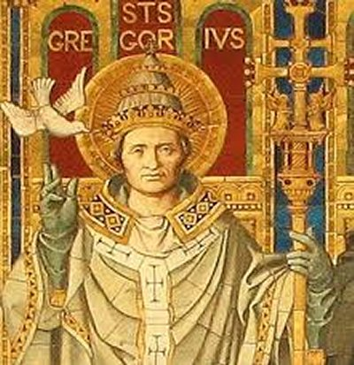
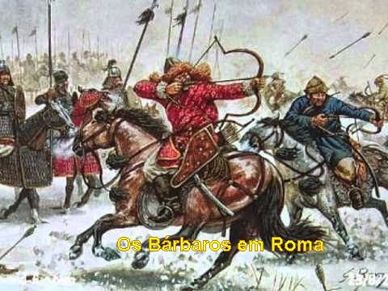
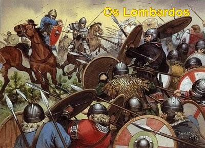
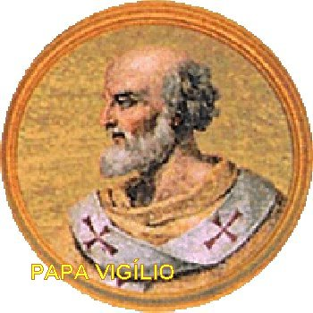
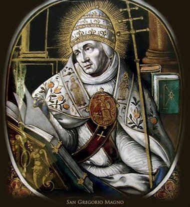
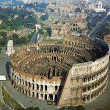

PREFEITO E
DIÁCONO DE ROMA
FAMÍLIA
Gregório nasceu em Roma,
provavelmente no ano 540, filho de Gordiano, um nobre senador romano que
possuía muitas propriedades principalmente na Sicilia, e da senhora Silvia,
também de família aristocrática, mas que se destacava primordialmente, por sua
profunda piedade cristã. Por isso mesmo, se acredita que os muitos ensinamentos
da mãe, sem duvida, devem ter contribuído de maneira efetiva para a santidade
do filho.
Quanto às datas existem muitas
dúvidas, e por essa razão, não são conhecidas com precisão tanto o dia como
o ano do seu nascimento. Isto porque, embora tivesse escrito uma grande variedade
de assuntos, não se preocupou em revelar algo sobre a sua própria pessoa. As
informações que se conhece sobre ele, foram extraídas das muitas cartas que
escreveu as quais, oferecem alguma notícia sobre a sua existência.
Sobre o fato de ter possuído
irmãos, suas cartas mencionam a existência de dois irmãos: Palatinus, que
permaneceu em Roma e que lhe prestou serviços quando se tornou Sumo Pontífice.
O outro, não se conhece o nome, mas se percebe que ele vivia na pequena Otranto,
cidade da Apúlia, no sul da Itália, e que pelas cartas, sabe-se que ele tinha um
excelente cozinheiro, que enviou a Roma a fim de servir ao seu irmão Papa
Gregório.
Por outro lado, através da sua
vasta correspondência, os hagiógrafos determinaram que a família vivesse num
belo palácio no Monte Célio, uma das sete colinas de Roma, do outro lado do
“Circo Máximo”
, numa rua ascendente à direita.
E junto com a família dos seus
pais, moravam também duas irmãs solteiras de Gordiano, Tarsila e Emiliana,
virgens que se consagraram a DEUS, cultivando e exercitando diariamente uma
profunda piedade, e a caridade cristã. Elas com a senhora Silvia são consideradas
Santas.
INFÂNCIA E JUVENTUDE

O notável historiador
eclesiástico, Monsenhor Phillip Hughes, efetuando minuciosas pesquisas, elaborou
uma imagem dos fatos que marcaram a infância de São Gregório:
"No ano
de 546, tinha Gregório 6 anos de idade, quando o bárbaro Totíla, chefe dos godos,
com o seu terrível exército invadiu Roma e destruiu o que desejou e matou muita
gente. A seguir, fez com que toda a população fosse evacuada, deixando a cidade
completamente vazia durante seis semanas, abandonada, onde saquearam e destruíram
o que quiseram sem nenhuma interferência. A população passou as mais abomináveis
e maiores provações, fugindo e se ocultando, para não sofrer as agressões das
violentas hordas bárbaras".
Na verdade, a maioria dos pesquisadores
concorda que a família de Gregório foi para uma das suas propriedades na Sicilia onde
permaneceu por um bom tempo e só retornou, quando Totíla permitiu que o povo voltasse
aos seus lares. As forças romanas se reorganizaram como foi possível, em face das
inúmeras dificuldades, e assim, mesmo com pouca eficiência enfrentaram a guerra
contra os bárbaros, que na verdade se recuaram, transformando os ataques em
guerrilhas no ano 552, as quais eram rechaçadas pelos militares locais.
Roma foi-se refazendo muito
lentamente, e somente no ano 554/555, quando Gregório tinha quatorze anos de
idade, pode presenciar o Imperador Justiniano arregimentar forças e conseguir
expulsar o último bárbaro godo de Roma. Nesta época o Imperador também deu ao
arruinado país uma nova Constituição, tornando a Itália província do Grande
Império Romano, cujo centro passou a ser Constantinopla. Isto porque, por
segurança foi transferida toda a administração do Grande Império Romano que se
encontrava em Roma,
para Constantinopla, antiga Bizâncio
E nessa situação transcorreram
mais quatorze anos, e então, no ano 568 vieram do nordeste dos Alpes, os
invasores mais selvagens e terríveis que abordaram a Itália, os cruéis
lombardos, que eram um povo germânico que haviam colonizado o Vale do Rio
Danúbio, e logo em seguida, invadiram a Península Itálica, sob a liderança de
Alboíno, criando um Reino Lombardo, depois denominado Reino Itálico. Esse povo
se revelou como sendo dos mais cruéis e sanguinários que até então haviam
penetrado na Europa. Por onde os lombardos passavam com seus exércitos destruíam
todas as benfeitorias e construções, enfim todos os vestígios que caracterizavam
a organização romana em cada região desapareciam como fumaça. Com feroz, abominável
e violenta avalanche, os invasores desembarcaram no Norte da Itália, eram mais de
cem mil guerreiros lombardos, seguidos de mais de 500 mil idosos, crianças e
mulheres, para se estabelecerem nos locais ocupados. Contam às testemunhas que
a barbaridade era geral: por onde passavam as Igrejas eram saqueadas e os
sacerdotes assassinados, cidades inteiras eram destruídas e trucidados os seus
habitantes. De religião ariana, contrária ao cristianismo, seus métodos
consistiam na violência e no terror, objetivando se apossarem definitivamente
das terras ocupadas, e por isso também matava toda a elite latina e o resto da
aristocracia que ainda encontravam. Desse modo, todo o Norte da Itália foi
ocupado pelos lombardos, e os sobreviventes fugiam apavorados para Roma.
Os invasores permaneceram na
Itália até o ano 774, se estabelecendo com suas famílias, ocupando e se
apoderando das cidades e das propriedades rurais, e sempre tentando alargar
as áreas ocupadas realizando constantes escaramuças e assédios, em direção
a Roma, e assim permaneceram praticamente durante duzentos anos, com poucas
interrupções.
SITUAÇÃO RELIGIOSA

Com estes acontecimentos, é
perfeitamente compreensível, que quando Gregório nasceu, da mesma maneira que a
situação política não era boa na Península, a situação eclesiástica também era
lamentável.
O Vaticano era dirigido pelo
Papa Vigílio, homem fraco, sem iniciativa e sem pulso dominador. Foi o primeiro
de uma relação de Papas eleitos por imposição dos Imperadores Bizantinos. A
Imperatriz Teodora de Bizâncio ordenou que ele fosse levado para Constantinopla,
por motivos de desavença política, lá permanecendo num semi-cativeiro por oito
anos. Quando foi autorizado a regressar, morreu ao chegar a Sicília, na
primavera do ano 555. Foi sucedido por Pelágio I (556-561), que também
foi designado Papa por determinação do Imperador de Bizâncio.
ESTUDOS E EDUCAÇÃO
Não se encontra sólidas
informações sobre a primeira educação de Gregório. Mas por certo foi muito boa,
em
face de ter encontrado um campo propício para o estudo, pois o Imperador
Justiniano I realizou um grande benefício à Itália, ao preparar uma legislação
específica para o desenvolvimento do ensino, da música e das artes. Esta
providência ajudou efetivamente a cultura intelectual, que estava reduzida quase
a zero em virtude das invasões bárbaras, permitindo que ela ganhasse um novo
impulso e pujança com aquela legislação, apesar das contínuas incursões das
tribos germânicas, as quais inclusive, já haviam se estabelecido em partes do
território italiano. Mesmo assim, o progresso caminhou sendo abertas novas
escolas de gramática, dialética e retórica, fato que evidenciava um interesse
geral do povo em aprender e desenvolver os seus conhecimentos.
Assim sendo, Gregório recebeu a
educação e instrução conforme os jovens da sua posição social. E deve ter sido
um excelente estudante, tanto é verdade, que o seu homônimo e contemporâneo São
Gregório de Tours, no escrito:
“Historia Francorum”, diz que na cidade de
Roma, não havia ninguém melhor e nem mais preparado em gramática, dialética
e retórica, do que Gregório, o seu “chara”.
Por tradição familiar, ele
cursou os estudos de Direito, seguindo a preferência do seu pai, para se formar
em Advocacia, ficando mais próximo de uma carreira político-administrativa, e
habituando-se a exercitar com frequência o Direito Romano de Justiniano.
Todavia, foi à literatura
cristã, especialmente aquela fundamentada na tradição, que exerceu grande
influência na sua vida. Leu e estudou diversos autores cristãos, especialmente:
Santo Ambrósio, São Jerônimo e de modo preferencial Santo Agostinho.
EXPERIÊNCIA ADMINISTRATIVA
Entretanto, também exerceu
vários cargos públicos com notável desempenho, e com a idade de um pouco mais de
30 anos, chegou a suprema magistratura: “Prefeito de Roma”. É bem verdade
que com a transferência da capital do Império Romano para Constantinopla, por
segurança, em face das permanentes invasões por povos bárbaros, o posto de Prefeito
perdia muito da sua magnificência e importância, a sua responsabilidade passou a
ser bem menor. Todavia, permanecia a dignidade de comandar a Cidade Imperial Eterna,
e também de possuir ampla autoridade sobre a policia, sobre algumas causas criminais
e, sobretudo, na defesa da cidade, das propriedades, dos bens públicos e dos habitantes.
E ele desempenhou todas estas funções com sabedoria, dignidade, responsabilidade e
perfeito bom senso administrativo.
EXPERIÊNCIA DE DEUS
 São Gregório, sempre foi um
jovem muito comedido em suas ações pessoais e atencioso com tudo o que se
referia à religião. Pelas suas próprias palavras, não se considerava um cristão
perfeito, mas respeitava e amava JESUS desde a sua adolescência. E por isso
mesmo, buscava sempre exercitar a sua fé cristã. O seu progresso
espiritual foi impulsionado pela graça Divina que converteu o seu coração,
realidade que ele buscava com pleno interesse, e que o conduziu a uma existência
irrepreensível, num chamado para uma vida mais perfeita em CRISTO.
São Gregório, sempre foi um
jovem muito comedido em suas ações pessoais e atencioso com tudo o que se
referia à religião. Pelas suas próprias palavras, não se considerava um cristão
perfeito, mas respeitava e amava JESUS desde a sua adolescência. E por isso
mesmo, buscava sempre exercitar a sua fé cristã. O seu progresso
espiritual foi impulsionado pela graça Divina que converteu o seu coração,
realidade que ele buscava com pleno interesse, e que o conduziu a uma existência
irrepreensível, num chamado para uma vida mais perfeita em CRISTO.
Nos “Diálogos”, escrito
por ele, confirma o seu anseio de uma vida contemplativa, dizendo: “Na época em que comecei aspirar ardentemente
por uma vida retirada...”
Porque, inspirado pela graça de DEUS, ele almejava por uma existência tranquila,
atraído que estava por uma vida contemplativa, da mesma maneira que também gostavam
de praticar a sua mãe Silvia e as duas tias: Tarsila e Emiliana.
Todavia, muito embora
manifestasse interiormente aquela grande vontade, ele não quis logo entrar na
vida religiosa, pois, segundo alguns estudiosos pesquisadores da sua existência,
ele na qualidade de Prefeito de Roma, sempre estava ajudando a Igreja e a
sociedade, e por outro lado, sentia a responsabilidade e o dever do cargo que
ocupava, percebendo as dificuldades que a cidade atravessava constantemente
ameaçada pelos lombardos e outros povos invasores, que queriam saquear Roma, e
por isso, ele nunca desejou abandonar a sua obrigação intransferível de proteger
a população, a municipalidade, e os bens do povo.
E assim, somente depois de
muitas preces, de imensa luta interior, e de perceber que a vida do povo e a
cidade estavam mais protegidas foi que decidiu abandonar tudo e entrar no
Convento. No mundo ele buscou servir intensamente a DEUS e não conseguindo
totalmente o seu objetivo, sentiu, não devia continuar insistindo, arriscando a
comprometer as suas próprias aspirações espirituais, e por isso mesmo, quis se
tornar um Monge.
É provável que sua entrada na
vida religiosa tenha ocorrido no ano 575, depois da morte de seu pai e
provavelmente quando tinha 35 anos de idade. Isto porque, Gregório vendeu na
Sicília, todas as propriedades que pertenciam a sua família e fundou seis
Mosteiros na ilha. Em Roma, transformou a mansão da família num magnífico
Mosteiro, que colocou sobre a invocação do Apóstolo Santo André, pelo qual
nutria grande devoção. Dotou todos os Mosteiros com renda suficiente, no sentido
de que os Monges pudessem viver sem preocupações financeiras.
Ele permaneceu morando no
Mosteiro de Roma, no qual fez uma separação, deixando confortáveis instalações
para sua mãe e as duas tias. E também, não ficou a frente do seu Mosteiro.
Escolheu um santo religioso Valêncio, que já tinha sido superior de um Mosteiro
na Província Romana de Valéria, e que se encontrava refugiado em Roma por causa dos
lombardos.
No ardor da sua devoção cristã,
escreveu um dos seus biógrafos, Gregório se alimentava com vegetais crus, que
sua mãe carinhosamente providenciava e trazia. Jejuava com frequência, e por
essa razão, constantemente estava doente, principalmente no inverno europeu,
colocando em risco a própria vida.
Todavia, sobreviveu a todos os
sacrifícios aos quais se submetia, embora permanecendo sempre com a saúde meio
abalada. Em consequência, os males que posteriormente se manifestaram no seu
corpo, podem ter sido motivados em parte, pelas tão extremosas penitências.
Esta realidade ele mesmo compreendeu mais tarde, quando escreveu:
“Se a corda da
cítara não está esticada, ela não dá nenhum som; se está esticada demais, o som
será desagradável. A abstinência não vale nada se não domamos nosso corpo
segundo nossas forças; ela é desregrada se sobrecarrega o corpo além da
medida. O fim da abstinência não é matar a carne, mas os vícios da carne”.
(Moralia in Job 20, 78)
Escreveu mais, a respeito do
mesmo assunto:
“A carne
é ora nossa colaboradora no bem, ora a sedutora que nos conduz ao mal. Se nós
lhe concedemos mais do que convém, alimentamos um inimigo; se não lhe damos o
necessário, matamos um aliado. É preciso, pois, nutrir a carne, porém, não mais
do que o necessário, para que ela continue a nos ajudar a fazer o bem”.
(Homilias sobre Ezequiel 2, 7, 19)
Viveu três anos em retiro no
Mosteiro de Santo André, em Roma, e sempre considerou que aquele foi o melhor
tempo e o mais feliz da sua vida.
UM DOS SETE DIÁCONOS DE ROMA
Todavia, ele não desfrutou
durante muito tempo daquela reclusão que tanto desejava e gostava. No ano 577
foi
convocado pelo Papa Bento I, que o ordenou Diácono e o criou Cardeal.
Assim, ele passou a ser um dos sete Diáconos que presidia uma das sete regiões
principais de Roma.
Acontece que o Papa Bento I
(575-579) teve um reinado muito curto, pois sua administração foi terrivelmente
conturbada pela invasão e devastação causada pelos lombardos que sitiaram Roma,
e pela terrível fome que na sequência, matou muita gente. Faleceu em 579, se
esforçando por todos os meios no sentido de controlar a situação. Em Novembro de
579 foi eleito e tomou posse o novo Papa Pelágio II.
A época em que Gregório foi
criado Cardeal, os lombardos constantemente ameaçavam a cidade com incursões
cruéis e destruidoras, e assim, a única chance de salvação estava na ajuda do
Imperador Tibério II, que estava em Constantinopla, se ele enviasse forças para
uma efetiva ação contra os abomináveis invasores. E por essa razão, o Papa
Pelágio II preparou um plano e mandou uma embaixada a Bizâncio (Constantinopla),
escolhendo Gregório por sua grande experiência em assuntos seculares assim como
por suas admiráveis virtudes pessoais, para ser o seu representante diplomático,
o Apocrisiário, ou seja, o seu Embaixador Permanente, que hoje denominamos de
Núncio Apostólico, junto a Corte Imperial (do Grande Império Romano), no
Oriente.

 PRÓXIMA PÁGINA
PRÓXIMA PÁGINA
RETORNA AO ÍNDICE